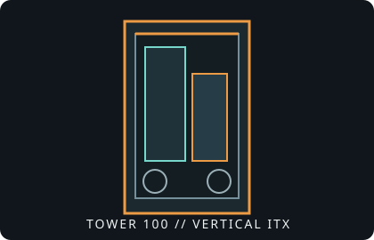

[ IDENTIFIED ENCLOSURE // MINI-ITX SHOWCASE CUBE ]
Thermaltake The Tower 100
462.8 × 266 × 266 mm (H × W × D); vertical Mini-ITX chassis with three tempered-glass viewing panels.

VARIANT / ARCHIVAL CAVEAT: Tower 100 is a Mini-ITX vertical showcase chassis, and is much larger than sub-15-liter sandwich cases. Confirm color/edition SKU and preserve the vertical riser/brackets if present.
Mechanical specifications and fit
| Catalog identity | Thermaltake The Tower 100 Mini Chassis. |
|---|---|
| Dimensions / board | 462.8 × 266 × 266 mm (H × W × D); Mini-ITX motherboard. |
| GPU / CPU cooler | GPU length up to 330 mm; CPU air cooler height up to 190 mm. Check card width and routing against the vertical layout as well as length. |
| Radiator / fans | One 120 mm radiator position at the rear; two preinstalled 120 mm exhaust fans on top and rear. Larger radiators are not supported without modification. |
| PSU / drives | ATX PSU up to approximately 180 mm; two 2.5-inch drives with the side bracket; up to two 3.5-inch drives only when the rear fan is removed. |
| Revision / identification | Color editions share the core layout; distinguish the Tower 100 from larger Tower 200/300 family products. |
Compatibility notes
This Mini-ITX case prioritizes a panoramic vertical presentation rather than minimum volume. A 330 mm graphics card is the listed length ceiling, but card width, power-cable exit and the precise orientation of the connector must also be checked. Official cooling support is a single 120 mm radiator; user modifications for larger radiators are outside the specified fit. Drive cages can affect airflow and cable space.
- Do not treat an unofficial 240 mm modification as manufacturer-supported radiator compatibility.
- Allow clearance above the top exhaust and route PSU leads without blocking airflow.
- Check drive-cage positions before choosing 3.5-inch disks and fan locations.
Manufacturer specifications and manual
- Thermaltake The Tower 100 specificationsOfficial product page and mechanical overview.
- Thermaltake Tower 100 user manual (PDF)Manufacturer-hosted installation and layout manual.